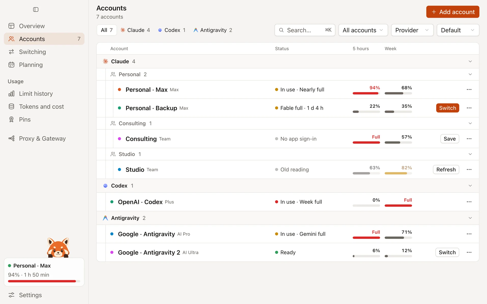
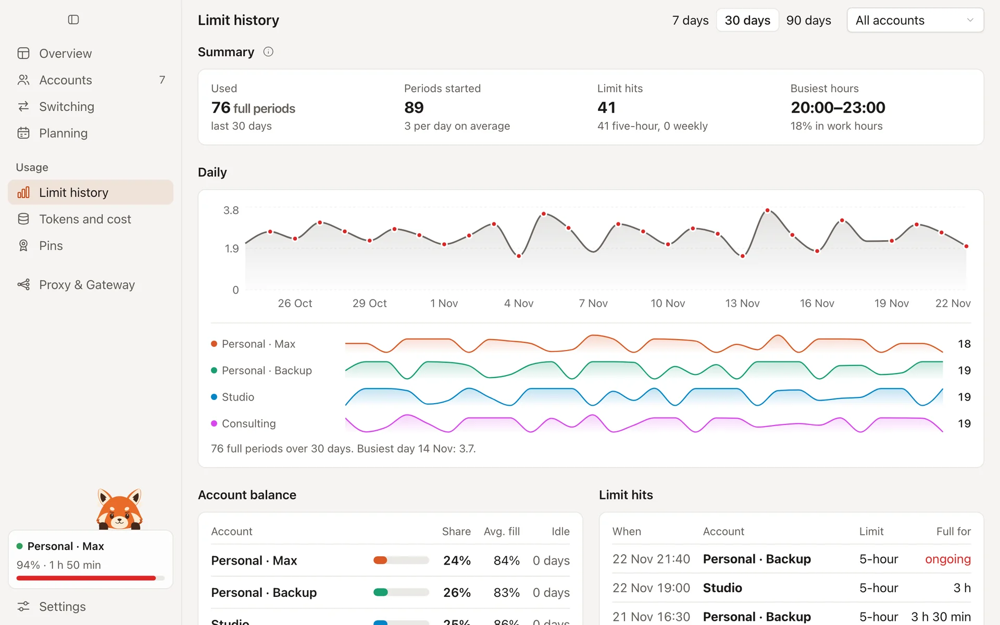
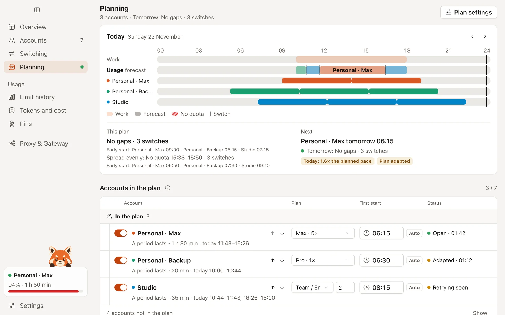
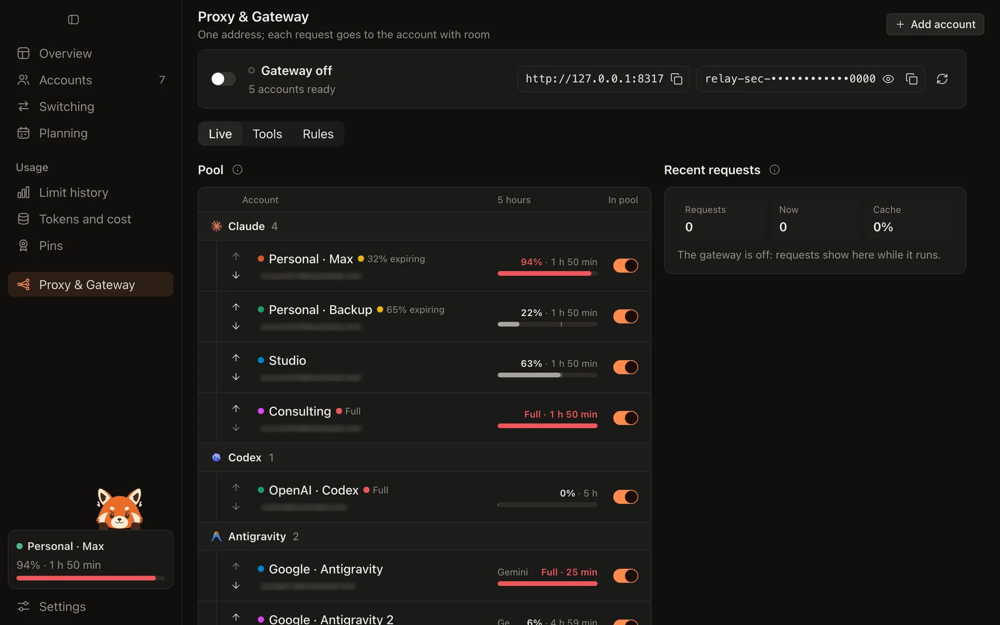
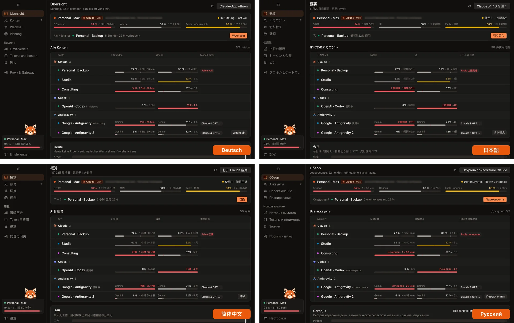

Every Claude account, one menu‑bar app.
Switch Claude Desktop between accounts, keep your Claude Code history on all of them, see every 5-hour and weekly limit at a glance, and let a local gateway spread the work.
Several Claude plans. One Claude app.
A personal Pro or Max and a company Team or Enterprise seat, say. The Claude app only knows one of them at a time, and signing out and back in:
- costs minutes,
- loses your Code tab’s conversations,
- and never tells you which account still has room.
Relay fixes that, from the menu bar. It runs entirely on your Mac and sends nothing to anyone but the services you already use.
Switching
One-click switch. Your Code history comes along.
Relay quits the Claude app, puts the other account’s saved sign-in back and reopens it. Nothing to retype, no browser dance.
- Switch from anywhere: the menu bar, the window, the widget or the CLI. It is a clean restart of the Claude app, after an encrypted backup of the files it changes.
- Shared Code history. Conversations and local projects of the accounts you pick are merged at every switch, so the same conversation is there after every switch, with its permission mode. Deleted conversations stay deleted; the Bypass permission mode never travels.
- Automatic switching (optional): when you quit the Claude app, Relay picks the account with the most usable room and switches once.

Claude, OpenAI Codex and Google Antigravity accounts in one list, grouped by provider and work group. One status per account and at most one action: switch, refresh or reconnect.
Limits
Every limit, every account.
5-hour, weekly and per-model limits (Opus, Fable) with reset times, for Claude, OpenAI Codex and Google Antigravity accounts, refreshed in the background.

- Limits
- 5-hour and weekly use with reset times, per-model limits, plans (Pro, Max 5×, Max 20×, Team, Enterprise, ChatGPT Plus, Google AI Pro), and a pace mark on every bar.
- Limit history
- Full periods used, limit hits, when you work and how evenly your accounts share the load.
- Tokens and cost
- Claude Code tokens per day, model and account, priced at API list prices.
Planning

A plan for your day.
Relay staggers each account’s 5-hour windows across your work hours, so the next account is ready before the current one runs out.
- It simulates your day from your learned pace and each plan’s size (a Max 20× counts 20 times a Pro), then picks start times that leave the fewest gaps with the fewest switches.
- Early start (optional, macOS and Linux) opens each account’s window ahead of work, so it resets when you need it.
- The plan adapts during the day when you work faster or slower than usual, and knows when an account’s week runs out.
Gateway
A gateway that spends the right account.
Point Claude Code, Codex CLI or omp at one local address. Each request goes to the account with room, keeping sessions and caches on their account.

A local, key-protected endpoint. Requests go to the account whose week ends first and that still has room, compared in real capacity: a Max 20× at 85 % still has more room than a fresh Pro.
Sessions stay on their account and its prompt cache. A busy account is drained at the start of a prompt, not in the middle.
Listens only on this Mac, or on your Tailscale network if you choose.
Off until you turn it on. It is the part of Relay furthest from ordinary use; read Terms & risk first.
Languages
15 languages
- English
- Türkçe
- Deutsch
- Français
- Español
- Português (Brasil)
- Italiano
- 日本語
- 한국어
- 简体中文
- 繁體中文
- Русский
- Українська
- Polski
- Nederlands
15 languages in the app, the menu bar, the widget and the CLI. Relay follows your system language until you pick one in Settings → General.

Install
Latest release v0.26.0. Every release carries a SHA256SUMS.txt and updates itself from GitHub Releases.
| Platform | Download | Notes |
|---|---|---|
| macOS 13+ Apple silicon | Relay-<version>-arm64.dmg | The main platform: menu-bar panel, widget, automatic switching. |
| Windows 10/11 x64 | Relay-Setup-<version>-x64.exe | Switching by hand, limits, accounts, gateway. Not tested on a real machine yet; reports are welcome. |
| Linux x64 | Relay-<version>-x86_64.AppImage | Works with the official Claude Desktop for Linux. |
| CLI macOS |
npm i -g @ahmetcankacar/relay
|
relay switch, relay usage, relay run … see the CLI guide. |
Opening it the first time on macOS
Relay is signed with the author’s own certificate but is not notarized by Apple. The first time you open it, macOS blocks it once.
- Drag Relay from the DMG into Applications and open it from there.
- When macOS says it cannot verify Relay, click Done.
- Open System Settings → Privacy & Security, find “Relay was blocked” and click Open Anyway.
That is needed once per version. If macOS keeps asking, run:
xattr -dr com.apple.quarantine /Applications/Relay.app
The full walkthrough is in INSTALL.txt.
What works on which platform
| Feature | macOS | Windows | Linux |
|---|---|---|---|
| Switch the Claude app between accounts | Yes | Yes | Yes |
| Shared Claude Code history | Yes | Yes | Yes |
| Limits, history, tokens and cost | Yes | Yes | Yes |
| Gateway for Claude Code / Codex CLI / omp | Yes | Yes | Yes |
| Planner | Yes | Yes | Yes |
| Early start of 5-hour windows | Yes | No | Yes |
| Automatic switch when you quit the Claude app | Yes | No | Yes |
| Switch and continue at the limit (experimental) | Yes | No | No |
Menu-bar panel, widget, relay CLI | Yes | No | No |
Privacy & security
Local only.
No account, no server and no telemetry or analytics. Relay’s data lives in ~/Library/Application Support/Relay on macOS and ~/.config/Relay on Linux.
- Who it talks to
-
The services your accounts already use, and GitHub for its own updates:
claude.aiapi.anthropic.comusage and profilechatgpt.com/api.openai.comCodexcloudcode-pa.googleapis.comAntigravityapi.github.comupdates
- Credentials
- Never reach the UI. Saved Claude app sign-ins are encrypted with a key kept in the macOS Keychain (Secret Service or KWallet on Linux). Files that hold the gateway key are readable by you only.
- The Claude app’s files
- Changed only while it is closed, after an encrypted backup and a write journal.
- Hardened app
- Sandboxed renderer windows, no developer tools in releases, only Relay’s own pages can call into the app, and a strict content security policy.
- Found a problem?
- Please report it privately; see SECURITY.md.
Terms & risk
Relay is unofficial, and some of what it does is not how Anthropic wants third-party tools to use Claude sign-ins. The Claude Code legal and compliance page says subscription sign-ins are for ordinary use of Claude Code and Anthropic’s own apps, and that third-party tools should not store, route or intermediate them.
Relay keeps your accounts’ sign-ins on your computer, encrypted, so it can switch the Claude app and read limits. The gateway goes further: it sends Claude Code requests to your accounts with those sign-ins. Anthropic can block such requests, or limit or suspend an account that uses them. Relay cannot prevent that, and you use it at your own risk.
Switching the Claude app and reading limits stay closest to ordinary use; the gateway is further, and omp through a Claude account is the furthest. A Team or Enterprise seat is also governed by your company’s agreement with Anthropic: ask your admin first, and use only accounts that are yours. Read the full terms & risk.
Questions
Does Relay pool or extend my quota?
No. Each account keeps its own limits; Relay only switches which account the Claude app (or a request through the gateway) uses, and helps you use each one’s time well. Use only accounts you are allowed to use, and read Terms & risk first.
Is Relay made by Anthropic?
No. Relay is an independent, unofficial tool. It is not affiliated with, endorsed by or sponsored by Anthropic, OpenAI or Google. Claude is a trademark of Anthropic.
Will switching interrupt a running reply?
A switch restarts the Claude app, so a reply or subagent that is still running stops. Relay asks first, and automatic switching only acts when nothing is running. Conversations themselves are kept and continue after the switch.
Why does macOS say it cannot verify Relay?
Relay is not notarized by Apple yet. Follow the three steps once per version. Updates are checked against Relay’s own certificate, so a tampered update is refused.
Can a Claude app update break Relay?
It can: Relay reads the Claude app’s local files and, for automatic continuation, its accessibility tree. Relay checks what it finds before it changes anything, keeps a backup, and an interrupted switch can be restored from the app.
How do I uninstall it?
Quit Relay from the menu bar, move Relay.app to the Trash, and delete ~/Library/Application Support/Relay if you also want your saved sign-ins gone. The Claude app keeps the account it was last switched to.